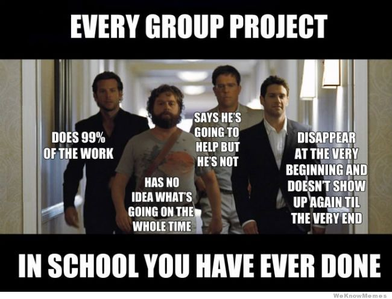

Oh boy...
Let me break into this by saying, that by no means am I a paid professional, so in that light, I think it's iterally impossible to get a team of slackers to conform to any type of SDLC while they're not being paid. This is my biased and unpaid experience log of my group project. Basically, it went something like this. No- it actually went exactly like this:
